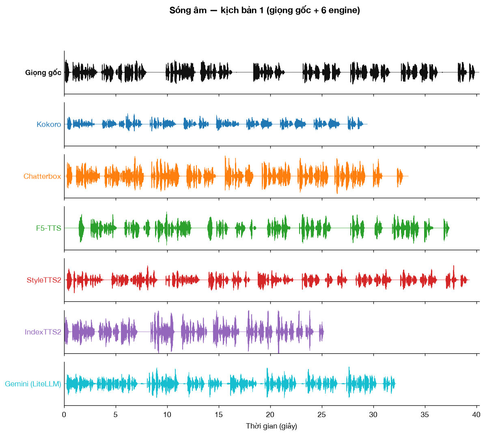
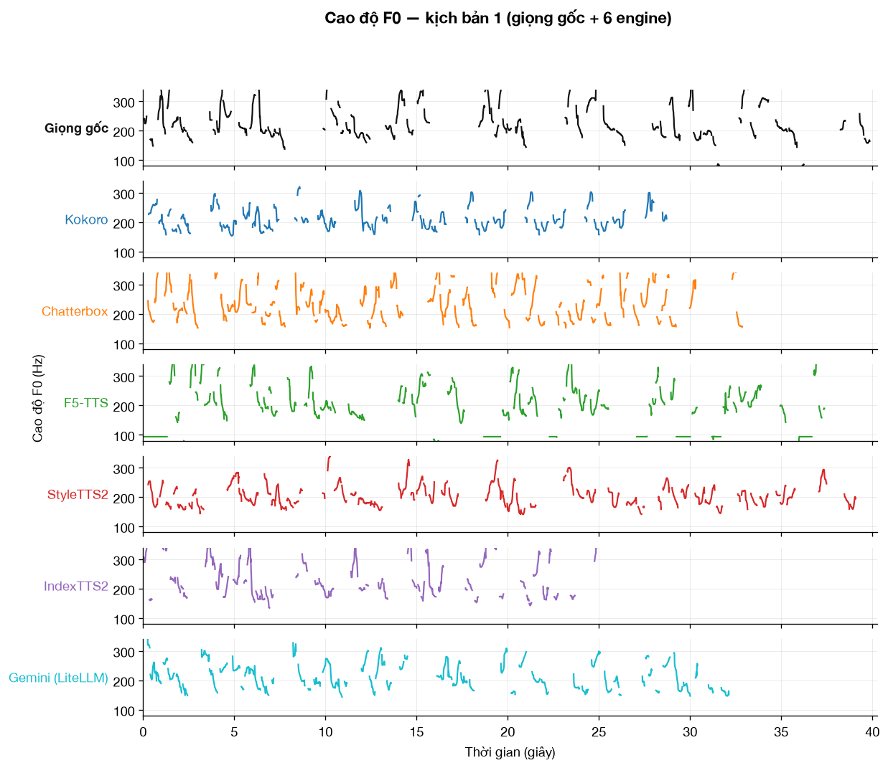
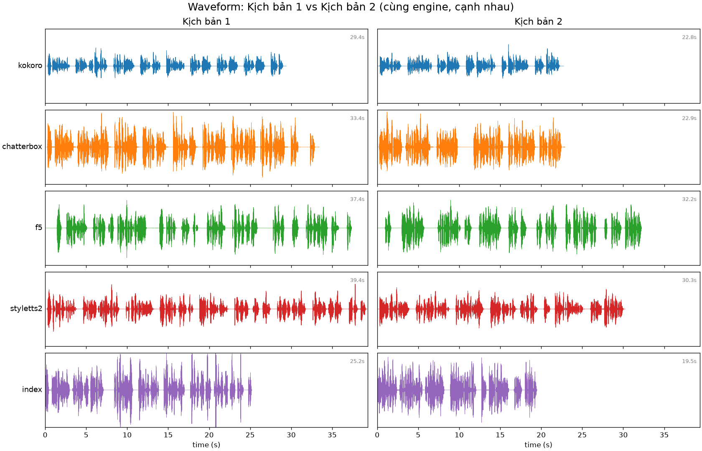
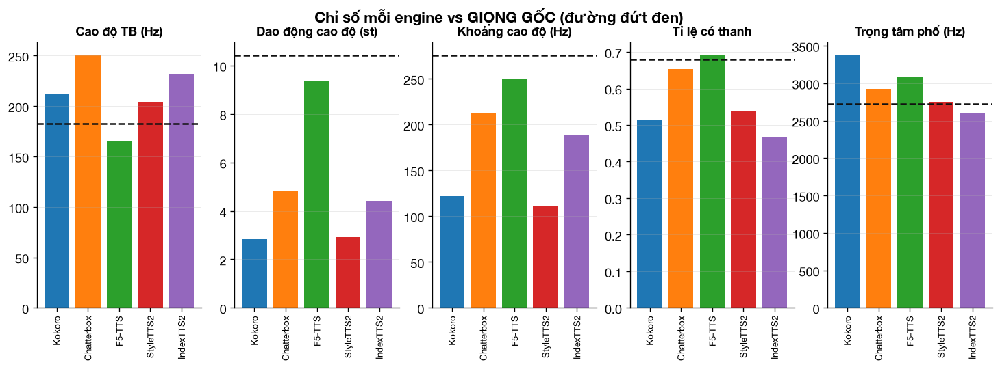
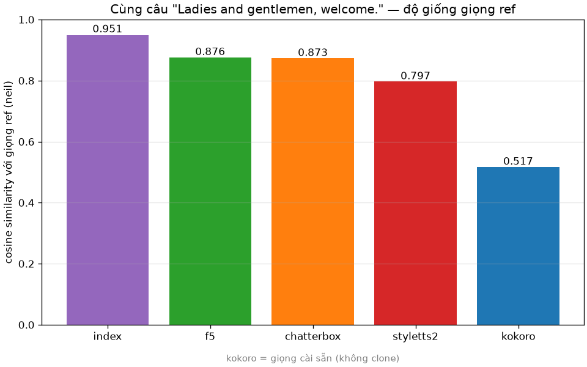
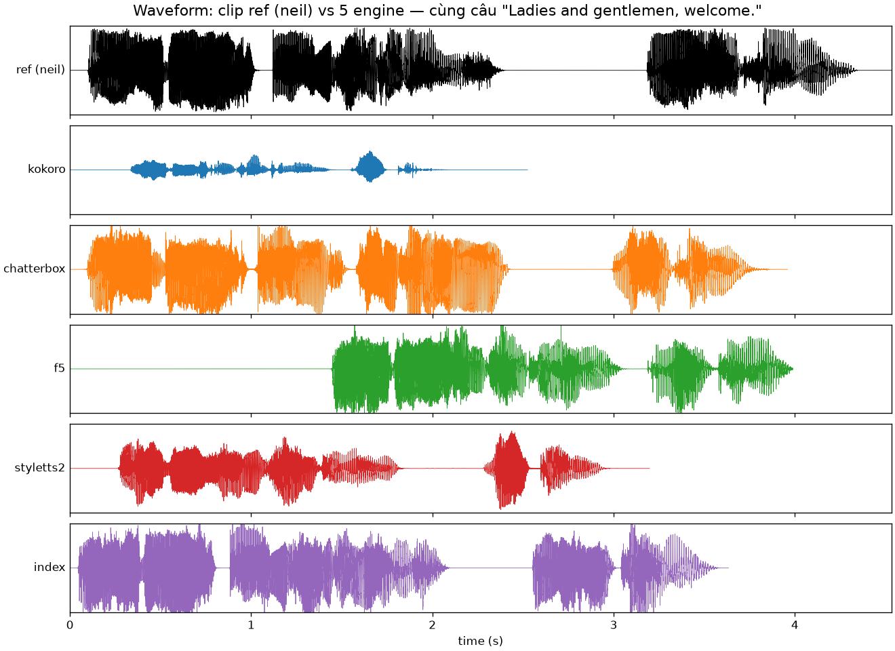
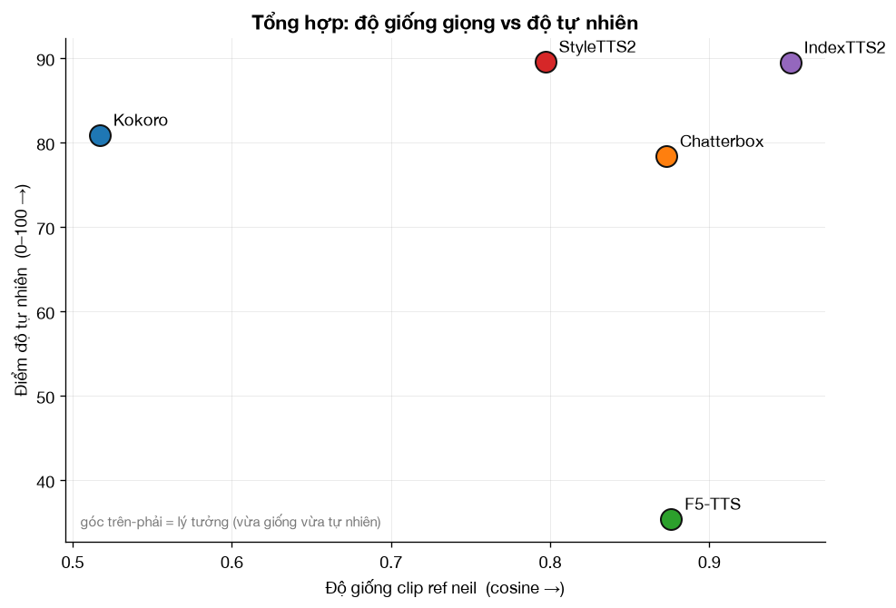

• Tự nhiên (UTMOS): nhóm đầu ~4.5 ngang giọng người (StyleTTS2 / Kokoro / Chatterbox / Gemini); F5 & IndexTTS2 thấp hơn
• Clone giống giọng nhất: IndexTTS2 — nhưng vướng license thương mại
• Nhanh / nhẹ nhất: Kokoro (Apache-2.0, thương mại thoải mái)
• Lưu ý license: F5 & IndexTTS2 weights KHÔNG cho dùng thương mại tự do (xem bảng License)
Cuộn xuống để nghe trực tiếp, xem biểu đồ & cách điều khiển (thời lượng · cảm xúc · phụ đề .srt).
| Lý do | Athena cần chọn engine TTS cho voiceover / video course / nhân bản giọng — so sánh khách quan thay vì chọn cảm tính, và có tài liệu tích hợp. |
| Phạm vi | 6 engine (5 open-source + Gemini commercial), cùng kịch bản; đo độ tự nhiên · clone · tốc độ · chi phí · điều khiển (thời lượng/cảm xúc/multi-speaker) · xuất .srt. |
| Thời gian | 15–22/06/2026 (cập nhật 24/06/2026) |
| Version | Kokoro 0.9.4 · Chatterbox 0.1.7 · F5-TTS 1.1.20 · IndexTTS2 2.0.0 · StyleTTS2 (yl4579/LibriTTS) · Gemini 2.5 Pro Preview TTS |
| Doc tích hợp Gemini | Mục 9 — Hướng dẫn cài & xài Gemini qua LiteLLM (ngay trong trang) |
| Engine | Cơ chế | Dung lượng model | Repo gốc (GitHub) |
|---|---|---|---|
| Kokoro | non-autoregressive 82M · không clone | ~313 MB | hexgrad/kokoro |
| Chatterbox | LM tự hồi quy (Llama 0.5B) | ~3.0 GB | resemble-ai/chatterbox |
| F5-TTS | flow-matching (DiT) | ~1.3 GB | SWivid/F5-TTS |
| StyleTTS2 | style diffusion + GAN | ~870 MB | yl4579/StyleTTS2 |
| IndexTTS2 | GPT tự hồi quy + cảm xúc | ~11 GB | index-tts/index-tts |
| Engine | License | Dùng thương mại? |
|---|---|---|
| Kokoro | Apache-2.0 (code + weights) | Được |
| Chatterbox | MIT (code + weights) | Được |
| F5-TTS | code MIT · weights CC-BY-NC | KHÔNG — weights phi thương mại (do dữ liệu Emilia) |
| StyleTTS2 | MIT + ràng buộc dùng giọng | Có điều kiện — phải có quyền dùng giọng / công bố là giọng tổng hợp |
| IndexTTS2 | Custom (Bilibili) | Phải xin phép (indexspeech@bilibili.com) |
| Gemini 2.5 Pro | Google API (đóng, trả phí) | Được (trả phí) |
• Đo trên Apple M4 Pro, CPU-only (no GPU) — thứ tự tốc độ có thể đổi trên GPU.
• Các mục nghe/biểu đồ dùng n = 1; riêng độ tự nhiên đã chạy lặp 5× đo mean±std (xem mục 2) — F5/IndexTTS2 dao động mạnh nên điểm 1-lần của chúng là nhiễu.
• Cấu hình: Kokoro voice
af_heart, Gemini voice Kore, speed 1.0, còn lại mặc định mỗi engine.• Open-source ≠ miễn phí: tự host tốn GPU/vận hành (TCO) vs Gemini API trả theo token.
• Độ giống: embedding Resemblyzer; sàn (2 người khác nhau) ≈ 0.61, trần (cùng người) ≈ 0.98.
• Chất lượng dùng UTMOS (dự đoán) — quyết định cuối vẫn nên xác nhận bằng người nghe (MOS thật).
1) Nghe thử — kịch bản dài (giọng gốc + 6 engine)
refs/speaker.wav; Kokoro & Gemini dùng giọng preset.Hello, this is a short voice consistency test. Please keep the same tone, speed, and energy throughout the recording. The quick brown fox jumps over the lazy dog. Today is June fifteenth, twenty twenty-six. I will now repeat one sentence three times. The product sounds clear, stable, and natural. The product sounds clear, stable, and natural. The product sounds clear, stable, and natural. End of test. Thank you.
| Kokoro | giọng preset (không clone) | |
| Chatterbox | ||
| F5-TTS | ||
| StyleTTS2 | ||
| IndexTTS2 | ||
| Gemini 2.5 Pro (LiteLLM) | giọng preset (không clone) |
Biểu đồ — sóng & cao độ (bấm để mở)


The morning train arrived exactly on time today. She carefully placed the old letters back into the wooden box. Could you please tell me how to get to the central library? Numbers like seven, nineteen, and forty-two appear quite often. Honestly, I did not expect the final results to be this good. Thank you for listening, and I hope you have a wonderful day.

2) Độ tự nhiên — UTMOS (MOS dự đoán)
| Engine | UTMOS (1–5) |
|---|---|
| Chatterbox | 4.57 |
| StyleTTS2 | 4.55 |
| Kokoro | 4.54 |
| Giọng gốc (người) | 4.52 |
| Gemini 2.5 Pro (LiteLLM) | 4.51 |
| IndexTTS2 | 4.10 |
| F5-TTS | 4.00 |
| Engine | UTMOS mean | ± std | n | Độ ổn định |
|---|---|---|---|---|
| Kokoro | 4.49 | ±0.001 | 2 | Deterministic (tái lập tuyệt đối) |
| StyleTTS2 | 4.23 | ±0.052 | 5 | Thấp |
| Chatterbox | 4.27 | ±0.121 | 5 | Vừa |
| Gemini 2.5 Pro | 3.89 | ±0.000 | 2 | Deterministic |
| F5-TTS | 3.90 | ±0.232 | 5 | CAO |
| IndexTTS2 | 3.56 | ±0.255 | 5 | CAO |
Chỉ số mô tả tín hiệu (proxy /100 cũ + biểu đồ) — KHÔNG phải chất lượng (bấm để mở)
| Engine | Proxy /100 (không dùng xếp hạng) |
|---|---|
| Gemini 2.5 Pro (LiteLLM) | 90.2 |
| StyleTTS2 | 89.6 |
| IndexTTS2 | 89.5 |
| Kokoro | 80.9 |
| Chatterbox | 78.4 |
| Giọng gốc (người) | 51.7 |
| F5-TTS | 35.4 |

3) Clone giọng voiceover (neil) — cùng 1 giọng ref, 2 kịch bản
neil.wav (4.5s) — giọng mẫu cho cả 2 kịch bản.| Clip ref (neil) | giọng gốc cần clone |
“See you next time.” (câu ngắn ~1–2s)| Kokoro | ||
| Chatterbox | ||
| F5-TTS | ||
| StyleTTS2 | ||
| IndexTTS2 |
“Ladies and gentlemen, welcome.” (đúng thoại clip ref)| Kokoro | ||
| Chatterbox | ||
| F5-TTS | ||
| StyleTTS2 | ||
| IndexTTS2 |
Bảng độ giống (2 kịch bản) + biểu đồ (bấm để mở)
| Engine | Kịch bản A — “See you next time.” (ngắn) | Kịch bản B — “Ladies and gentlemen, welcome.” (đúng thoại ref) |
|---|---|---|
| IndexTTS2 | 0.825 | 0.951 |
| F5-TTS | 0.801 | 0.876 |
| Chatterbox | 0.699 | 0.873 |
| StyleTTS2 | 0.751 | 0.797 |
| Kokoro | 0.482 | 0.517 |


4) Tổng hợp — giống giọng vs tự nhiên, và tốc độ
Biểu đồ đánh đổi & thời gian tạo (bấm để mở)

| Engine | Thời gian tạo (giây, CPU) |
|---|---|
| Kokoro | 12.7 |
| StyleTTS2 | 29.5 |
| Chatterbox | 38.0 |
| IndexTTS2 | 68.8 |
| F5-TTS | 253.7 |
5) Demo ứng dụng — Intro khoá học (giọng clone) + phụ đề chạy theo giọng
.srt khớp giọng cho video.
→ Rút ra: clone đọc intro ổn; .srt chuẩn hoá cue khớp tốt; giọng rõ (Kokoro/Index) cho phụ đề chính xác, F5 sai chữ.Welcome to this Harvard introductory course. Over the next few sessions, we will explore the core concepts together, with clear examples and hands-on practice. Whether you are just starting out or brushing up, you are in the right place. Let's get started.
| Đoạn ref (TikTok, giây 10–20) | nguồn clone |
Chất lượng phụ đề (số cue / độ khớp script) (bấm để mở)
| Engine | Số cue | WER (lời khớp script) |
|---|---|---|
| Kokoro | 7 | 4.8% |
| Chatterbox | 7 | 4.8% |
| F5-TTS | 7 | 14.3% |
| StyleTTS2 | 7 | 4.8% |
| IndexTTS2 | 7 | 4.8% |
| Gemini 2.5 Pro (LiteLLM) | 7 | 9.5% |
6) Spec: điều khiển thời lượng (đặt câu này = N giây)
Khả năng điều khiển thời lượng từng engine (bấm để mở)
| Engine | Điều khiển thời lượng? | Cách |
|---|---|---|
| F5-TTS | Có (tricky) | --fix_duration nhưng tính CẢ độ dài clip ref; + --speed |
| Kokoro | Qua tốc độ | tham số speed (hệ số tempo) |
| StyleTTS2 | Qua tốc độ | scale bộ dự đoán thời lượng (cần code) |
| IndexTTS2 | Nâng cao | model hỗ trợ duration-control; API cơ bản tự canh |
| Chatterbox | Tự canh | không có tham số thời lượng |
atempo, giữ cao độ) → ép đúng số giây mong muốn, như demo bên trên (2/3/4s từ cùng một câu).| Câu | Target | Thực tế |
|---|---|---|
| Welcome to this Harvard introductory course. | 2.5s | 2.51s |
| Over the next few sessions, we will explore the core concepts together, with clear examples and hands-on practice. | 6.0s | 6.00s |
| Whether you are just starting out or brushing up, you are in the right place. | 4.0s | 4.01s |
| Let's get started. | 1.5s | 1.51s |
1 00:00:00,000 --> 00:00:02,511 Welcome to this Harvard introductory course. 2 00:00:02,811 --> 00:00:08,816 Over the next few sessions, we will explore the core concepts together, with clear examples and hands-on practice. 3 00:00:09,116 --> 00:00:13,125 Whether you are just starting out or brushing up, you are in the right place. 4 00:00:13,425 --> 00:00:14,936 Let's get started.
7) Dịch vụ thương mại (closed-source) — có trả phí
speed/temperature bị bỏ qua; chi phí research chỉ vài cent.| HumeAI — Octave 2 (audio) | TTS biểu cảm, có API | |
| Gemini 2.5 Pro TTS (qua LiteLLM) | Google · giọng preset · không clone |
| Dịch vụ | Sản phẩm | Giá tham khảo |
|---|---|---|
| HumeAI (Octave 2) | Audio (TTS, có cảm xúc) | ~$7.60 / 1 triệu ký tự (API) · free 10k ký tự/tháng · ~½ giá ElevenLabs |
| Gemini 2.5 Pro TTS (Google, qua LiteLLM) | Audio (TTS, giọng preset) | $1 /1M token input + $20 /1M token audio output · (bản Flash rẻ hơn: $0.5 / $10) · qua proxy LiteLLM |
| Knowlify | Video explainer (có narration) | $50–$500/tháng (video không giới hạn) · Studio ~$1,000/video |
"Say cheerfully: ...") — model đổi cách đọc, KHÔNG đọc câu lệnh ra. Đã test: tham số speed và temperature qua proxy bị bỏ qua → Gemini chỉ chỉnh được giọng (voice ~30) + cảm xúc/phong cách (prompt); muốn đổi tốc độ phải dùng atempo hậu kỳ./v1/chat/completions + extra_body.generationConfig.speechConfig.multiSpeakerVoiceConfig (format pcm16). Gemini hỗ trợ tối đa 2 người nói; 5 engine open-source không có (phải ghép thủ công).8) Tiếng Việt — engine nào đọc được?
Chào mừng bạn đến với khoá học nhập môn. Trong các buổi tới, chúng ta sẽ cùng tìm hiểu những khái niệm cốt lõi, với ví dụ rõ ràng và thực hành trực tiếp. Chúc bạn học tốt.
| Engine | Audio | Whisper nghe lại (dài · nội dung) | Kết quả |
|---|---|---|---|
| Gemini 2.5 Pro (LiteLLM) | 9.0s · “Chào mừng bạn đến với khoá học nhập môn. Trong các buổi tới…” | Đọc ĐÚNG tiếng Việt | |
| Kokoro | 33.4s · “Chow, M letter 1EBNG, B letter 1EA1N…” (đọc từng ký tự) | HỎNG — không có tiếng Việt | |
| IndexTTS2 | 28.6s · “Hãy subscribe cho kênh lalaschool…” (nội dung KHÁC hẳn) | HỎNG — bịa nội dung |
9) Hướng dẫn — Gemini 2.5 Pro TTS qua LiteLLM
0. Yêu cầu
- API key của LiteLLM proxy (xin từ admin Athena).
- Base URL:
https://litellm.athena.tools(proxy chạy LiteLLM, Swagger UI ở/). - Model:
gemini-2.5-pro-preview-tts(là model duy nhất proxy đang expose, kiểm bằngGET /v1/models). - Python 3.10+ (chỉ cần
urllibchuẩn +certifi; không cần SDK riêng).
Đặt key vào biến môi trường (hoặc file .env, không commit):
export LITELLM_API_KEY=sk-...
1. Cách 1 — Đơn giọng (chuẩn OpenAI /audio/speech)
curl:
curl https://litellm.athena.tools/v1/audio/speech \
-H "Authorization: Bearer $LITELLM_API_KEY" \
-H "Content-Type: application/json" \
-d '{"model":"gemini-2.5-pro-preview-tts","input":"Welcome to the course.","voice":"Kore","response_format":"wav"}' \
--output out.wavPython (có xử lý SSL + Cloudflare — xem mục Lưu ý):
import os, json, ssl, urllib.request, certifi
key = os.environ["LITELLM_API_KEY"]
ctx = ssl.create_default_context(cafile=certifi.where())
req = urllib.request.Request(
"https://litellm.athena.tools/v1/audio/speech",
data=json.dumps({
"model": "gemini-2.5-pro-preview-tts",
"input": "Welcome to the course.",
"voice": "Kore",
"response_format": "wav",
}).encode(),
headers={
"Authorization": f"Bearer {key}",
"Content-Type": "application/json",
"User-Agent": "Mozilla/5.0", # tránh Cloudflare 1010
}, method="POST")
open("out.wav", "wb").write(urllib.request.urlopen(req, context=ctx).read())Trong repo này: python -m athena_tts --engine litellm --litellm-voice Kore --text "..." --out out.wav.
2. Cách 2 — Điều khiển cảm xúc / phong cách (qua prompt)
Gemini điều khiển bằng mô tả ngôn ngữ tự nhiên ngay trong input — model đổi cách đọc, KHÔNG đọc câu lệnh ra tiếng (đã verify bằng transcribe):
{"input": "Say cheerfully: Welcome to the course.", "voice": "Kore", ...}
{"input": "Say in a sad, somber tone: ...", ...}Cũng hỗ trợ inline audio tag như [whispers], [laughs] (theo docs Google).
3. Cách 3 — Multi-speaker (2 giọng trong 1 lần sinh)
KHÔNG dùng /audio/speech (field multi-speaker bị bỏ qua). Phải qua /v1/chat/completions,
format pcm16, truyền config qua extra_body.generationConfig.speechConfig.multiSpeakerVoiceConfig.
Audio trả về base64 PCM16 trong JSON → decode thành wav 24 kHz.
import os, json, ssl, base64, urllib.request, certifi
import numpy as np, soundfile as sf
key = os.environ["LITELLM_API_KEY"]
ctx = ssl.create_default_context(cafile=certifi.where())
dialogue = "Host: Welcome to the course, everyone.\nGuest: Thanks for having me."
body = {
"model": "gemini-2.5-pro-preview-tts",
"messages": [{"role": "user", "content": dialogue}],
"modalities": ["audio"],
"audio": {"format": "pcm16"},
"extra_body": {"generationConfig": {"responseModalities": ["AUDIO"], "speechConfig": {
"multiSpeakerVoiceConfig": {"speakerVoiceConfigs": [
{"speaker": "Host", "voiceConfig": {"prebuiltVoiceConfig": {"voiceName": "Kore"}}},
{"speaker": "Guest", "voiceConfig": {"prebuiltVoiceConfig": {"voiceName": "Puck"}}},
]}}}},
}
req = urllib.request.Request("https://litellm.athena.tools/v1/chat/completions",
data=json.dumps(body).encode(),
headers={"Authorization": f"Bearer {key}", "Content-Type": "application/json", "User-Agent": "Mozilla/5.0"},
method="POST")
resp = json.loads(urllib.request.urlopen(req, context=ctx).read())
pcm = np.frombuffer(base64.b64decode(resp["choices"][0]["message"]["audio"]["data"]), dtype=np.int16)
sf.write("dialogue.wav", pcm, 24000)Giới hạn: tối đa 2 người nói.
4. Giọng (voice)
~30 giọng preset, vd: Kore (firm), Puck (upbeat), Zephyr (bright), Enceladus (breathy), Sulafat (warm)… Chọn qua voice (Cách 1/2) hoặc voiceName (Cách 3). Không clone giọng tùy ý.
5. Lưu ý quan trọng (đã test thực tế)
- SSL: Python.org trên macOS thiếu CA → dùng
certifi(cafile=certifi.where()), nếu không sẽCERTIFICATE_VERIFY_FAILED. - Cloudflare: thiếu User-Agent → bị chặn
403 error 1010. ThêmUser-Agent: Mozilla/5.0. - Format:
/audio/speechnhậnwav;/v1/chat/completionschỉ nhậnpcm16(trả base64). speedvàtemperature: BỊ BỎ QUA qua proxy (output không đổi). Muốn đổi tốc độ → time-stretch hậu kỳ (ffmpegatempo).- Output: PCM 24 kHz.
6. Chi phí
| Model | Input (text) | Output (audio) |
|---|---|---|
| gemini-2.5-pro-preview-tts | $1.00 / 1M token | $20.00 / 1M token |
| gemini-2.5-flash-preview-tts | $0.50 / 1M token | $10.00 / 1M token |
Audio output là phần tốn chính. Ví dụ research này: ~789 ký tự input → 56s audio ≈ vài cent.
7. Nguồn (cross-check)
- Gemini speech generation: https://ai.google.dev/gemini-api/docs/speech-generation
- Gemini API pricing: https://ai.google.dev/gemini-api/docs/pricing
- LiteLLM text-to-speech: https://docs.litellm.ai/docs/text_to_speech
- LiteLLM repo: https://github.com/BerriAI/litellm
- Proxy (Swagger UI): https://litellm.athena.tools/
10) Báo cáo PDF đầy đủ
build_demo.py. Để gửi: zip cả thư mục demo/.